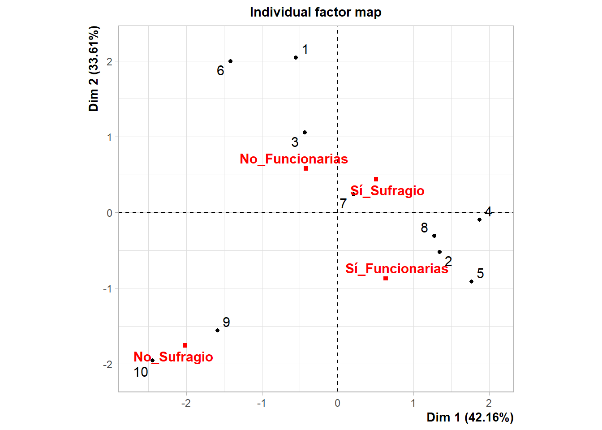
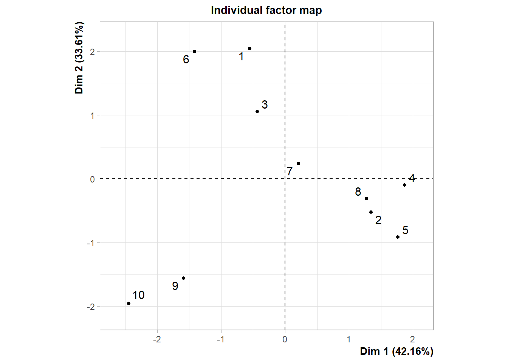
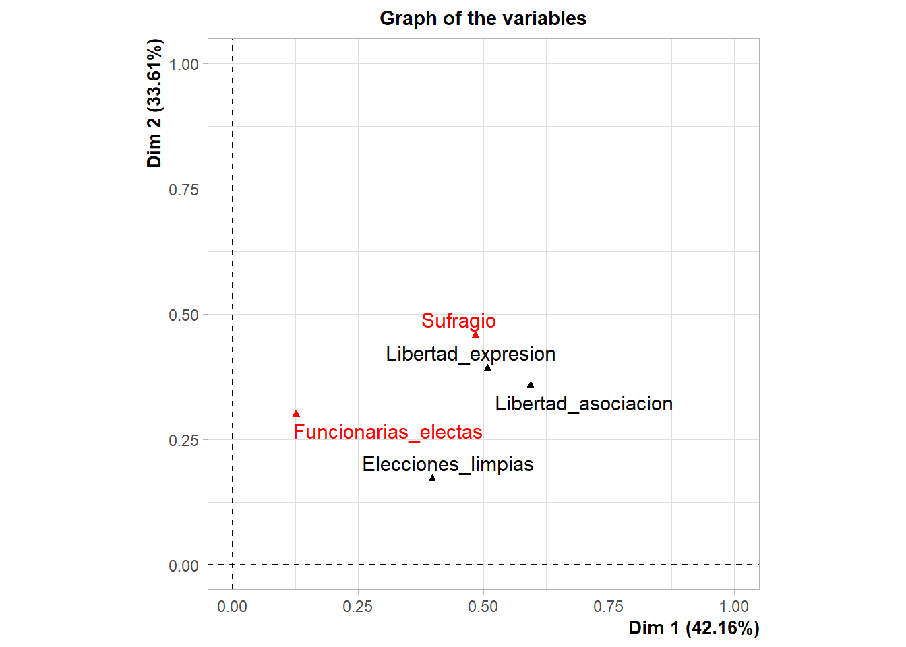
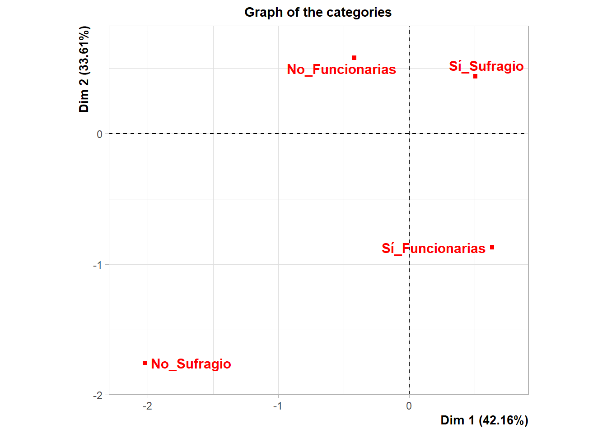
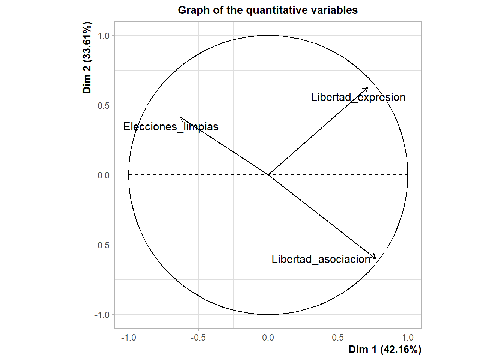

Capítulo 3 Análisis Multivariado
En la construcción de índices compuestos, la reducción de la dimensionalidad, utilizando técnicas como el Análisis de Componentes Principales (ACP) o el Análisis Factorial (AF), facilita la síntesis de información de varias variables al extraer factores clave que reflejan la esencia de los datos. Al aplicar ACP, por ejemplo, podemos concentrarnos en los componentes principales que retienen la mayor parte de la información útil, lo que nos ayuda a construir un índice más robusto y representativo. Por su parte, el AF va más allá al intentar identificar las estructuras subyacentes que explican las correlaciones entre las variables, lo que permite descubrir factores latentes que pueden no ser directamente observables. Para datos mixtos, que combinan variables continuas y categóricas, se emplea el Análisis Factorial para Datos Mixtos (FAMD), una extensión de las técnicas de análisis factorial que puede manejar la presencia de diferentes tipos de datos en el conjunto de datos.
3.1 Análisis Factorial para Datos Mixtos
Cuando se trabaja con conjuntos de datos mixtos que incluyen tanto variables continuas como categóricas, es recomendable utilizar el Análisis Factorial para Datos Mixtos (FAMD). En R, este análisis se puede realizar mediante el paquete FactoMineR (Pages 2004).
# FAMD
library(FactoMineR)
library(factoextra)
# Convertir las columnas binarias en factores
datos_IST_imputados_3$Funcionarias_electas <- factor(
datos_IST_imputados_3$Funcionarias_electas,
levels = c(0, 1),
labels = c("No_Funcionarias", "Sí_Funcionarias")
)
datos_IST_imputados_3$Sufragio <- factor(
datos_IST_imputados_3$Sufragio,
levels = c(0, 1),
labels = c("No_Sufragio", "Sí_Sufragio")
)
famd <- FAMD(datos_IST_imputados_3 [,-1], graph = TRUE)
Usualmente se elige un conjunto de dimensiones que explique entre el 70 y 80% de la varianza. A modo de ejemplo, si se escogen las dos primeras dimensiones, estas suman el 75.776% de la varianza. En este sentido, las variableslibertad de asociación y libertad de expresion son relevantes en la Dimensión 1, así como Sufragio en la Dimensión 2. Esto se deduce de la calidad de representación (cos2) y de los loadings. Para mayor información sobre cos2 véase a (Lê 2008).
Los loadings representan la contribución de cada variable original a las dimensiones.
## Dim.1 Dim.2 Dim.3 Dim.4 Dim.5
## Libertad_asociacion 0.5930745 0.3573779 0.0002116513 0.03491126 0.014424671
## Elecciones_limpias 0.3976971 0.1723745 0.4052112708 0.01391239 0.010804730
## Libertad_expresion 0.5076766 0.3923932 0.0492532336 0.03895055 0.011726400
## Funcionarias_electas 0.1261796 0.3004903 0.5446771862 0.02581813 0.002834842
## Sufragio 0.4834638 0.4580777 0.0001209539 0.04845307 0.009884514# Grafica de los loadings
fviz_famd_var(famd, choice = "var",
col.var = "contrib",
gradient.cols = c("#00AFBB", "#E7B800", "#FC4E07"),
repel = TRUE)
Cada punto representa una variable original del conjunto de datos. La posición de un punto con respecto a los ejes indica cómo contribuye esa variable a cada dimensión. Por ejemplo, las variables Libertad_expresion y Libertad_asociacion tienen una alta contribución en la Dim1.